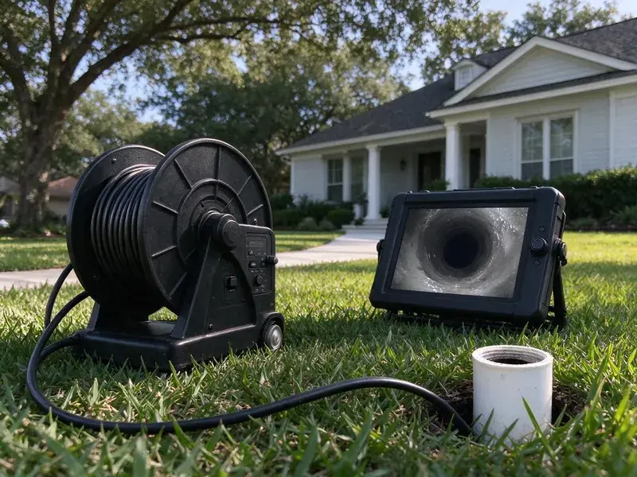

Sewer Line Replacement in Sandy, UT
Stop paying for repeat sewer cleanings. We replace failing laterals in Sandy, UT with permitted and inspected work.
- Trenchless Options Available
- Permits and Inspections Handled
- Fast, Reliable Service
- Guaranteed Work
Your Trusted Plumbers for Sewer Line Replacement in Sandy, UT.
We handle digging or trenchless work, permits, inspection and site restoration.
Reliable Sewer Line Replacement in Sandy, UT for Older and Damaged Pipes
BPK Plumbing replaces sewer laterals that are beyond cleaning or spot repair. We start with a camera inspection to document the damage. Then we recommend pipe bursting, lining or open-trench replacement based on your yard, depth and pipe health.
Our expertise includes:
- Two-way cleanout installation at the foundation
- Open-trench replacement with proper slope and bedding
- Code Compliant Installations

Additional Drain Services Services in Sandy, UT
From stubborn kitchen clogs to main sewer backups, our drain services in Sandy, UT clear the line and keep it clear with camera-verified results.


Customers
Why Choose BPK Plumbing for Sewer Line Replacement in Sandy, UT?
Our experience with local soil conditions and building codes in Utah means your sewer line replacement is built to last.
- Site Restoration, We backfill, compact and restore the work area as part of the job.
- Quality Materials, We use durable, high-grade piping materials designed to hold up in Utah conditions.
- Transparent Pricing, You'll receive a clear, upfront estimate before any work begins, with no surprise charges.
Citywide Coverage
We replace sewer lines throughout Sandy, in neighborhoods with tight lots, mature trees and long driveways. Our crew plans each job around landscaping, hardscape and buried utilities.
Experienced Team
With years of hands-on experience, our technicians at BPK Plumbing are skilled at diagnosing complex sewer line issues and completing precise replacements with minimal disruption to your property.
Safety-First Approach
Safety is a priority on every sewer line replacement we take on. We follow OSHA guidelines and local Sandy, UT plumbing codes to protect your property and our crew.
Trusted Certified Sandy Plumbing Services Professionals
At BPK Plumbing, we take pride in providing licensed, certified plumbing services throughout Sandy, UT. Backed by leading industry credentials, our experienced plumbers combine technical skill with genuine customer care. Whether it is repair, installation, or maintenance, we follow strict safety and quality standards to deliver lasting results you can trust.
Call Us Now PHCC Plumbing Contractor Recognition
PHCC Plumbing Contractor Recognition Better Business Bureau (BBB) Accreditation
Better Business Bureau (BBB) Accreditation Angi Certified Pro
Angi Certified Pro ISO 9001 Quality Management Certification
ISO 9001 Quality Management CertificationDependable Sewer Line Replacement Services in Sandy, UT
Clay and Orangeburg Line Replacement in Sandy, UT
Clay pipe joints let roots in, and Orangeburg fiber pipe flattens and blisters with age. Both are near the end of their service life in many older properties. When the camera shows multiple failures, replacement is typically the best value. We remove or burst the old line and install modern pipe with a long expected service life. You get a smooth, root-resistant line to the street.

Cast Iron Sewer Replacement in Sandy
Cast iron drains in older homes corrode from the inside, particularly along the bottom of the pipe. Over time this leaves cracks, holes and a rough surface that catches waste. Replacing the cast iron sewer outside the home is often the first step. We can also evaluate under-slab cast iron and discuss lining or rerouting options. New PVC or HDPE will not rust or scale the same way.
Sewer Pipe Lining as an Alternative in Sandy
Cured-in-place pipe lining creates a new pipe inside the old one. After cleaning, a resin-soaked liner is pulled in and cured in place. This works when the host pipe still holds its shape without major sags or collapse. Lining can be a good option under slabs or finished areas. We tell you plainly if your line is a candidate.
Sewer Line Replacement Cost in Sandy, UT
Cost depends on length, depth, soil type, access and the method used. Open-trench replacement in an open yard can be quite affordable per foot, while trenchless methods may cost more per foot but save on restoration. Hardscape, landscaping and driveways change the math quickly. We give you a written estimate for each option after a camera inspection. That way you can compare total cost, not just the headline price.
Traditional Trench Sewer Line Replacement in Sandy
For significant damage or certain pipe layouts, traditional trenching may be the most effective method. This involves digging a trench to access and replace the damaged sewer line directly. Our team carefully plans the excavation to minimize disruption to your landscape, using the right equipment for efficient, precise digging. We make sure of proper grading and backfilling to prevent future issues and restore your property.
Commercial Sewer Line Replacement in Sandy
Businesses in Sandy rely on dependable plumbing systems. A failing commercial sewer line can lead to serious operational disruptions and health hazards. BPK Plumbing provides efficient, professional commercial sewer line replacement, reducing downtime for your business. We work quickly to restore your sewer system, following all commercial codes and standards.
Open-Trench Sewer Replacement in Sandy, UT
Traditional excavation is sometimes the best option, especially when the old line has a severe belly or the slope must be corrected. We dig along the line, remove the old pipe and set new PVC on compacted bedding at the correct grade. Rocky or hard-packed soil can slow digging, and we plan for that in the estimate. Each joint is glued and checked before backfill. The inspector sees the open trench before we close it up.

Trenchless Sewer Line Replacement in Sandy, UT
To minimize disruption, trenchless sewer line replacement replaces pipes without extensive digging. We offer pipe bursting, where a new pipe is pulled through the old one, fracturing the old pipe outward. This is a great fit when protecting landscaping or driveways is a priority. The method works well for many homes in Sandy and can often be finished faster than traditional methods, using high-density polyethylene (HDPE) pipe known for its long life.
Sewer Line Replacement Near Me in Sandy, UT
If you're searching for 'sewer line replacement near me' in Sandy, UT, call BPK Plumbing. Our local team is positioned to provide fast response and expert service throughout the area. We understand the plumbing needs of our neighbors.
When you search for 'sewer line replacement near me' in Sandy, UT, you'll find BPK Plumbing as a trusted local expert. We know the plumbing infrastructure and local conditions that affect sewer lines in our area.
BPK Plumbing at a Glance
- Licensed and insured plumbers serving Sandy, UT
- 24/7 emergency service with same-day scheduling
- Clear written estimates, no hidden fees
- 4.8-star rated by 470+ Utah customers
Sandy Map
Sandy Information
- Population
- 91,943
- Area codes
- 801/385/435
- Service area
- Sandy and communities within 40 miles
- Nearby
- Draper, Murray, South Jordan, Taylorsville
In Sandy, UT, shifting soil can put serious stress on sewer lines, leading to cracks and offsets that frequently call for replacement. Soils in Utah vary from clay that swells when wet to rocky benches and collapsible soils that settle when they take on water.
Expert Services
Trust our professionals for reliable BPK Plumbing solutions in Sandy, UT.
Our Specialized Plumbing Services in Sandy, UT
At BPK Plumbing, we provide a complete range of plumbing services across Sandy, UT. From leak detection to full system installations, our team ensures fast, precise, and affordable service for both residential and commercial properties. Explore our core services below:


How Our Sewer Line Replacement Process Works in Sandy, UT
Replacing a sewer line is a project, and we manage it from inspection to final restoration.
Request a Quote
Call (385) 543-4073 to schedule an inspection. Our team will visit your property to evaluate the sewer line issue and discuss potential solutions.
Detailed Inspection
We perform a complete video inspection to pinpoint the exact problem and location. This allows us to provide an accurate diagnosis and recommended repair plan.
Customized Solution
Based on our findings, we propose the most effective sewer line replacement method, whether it is trenchless or traditional. We explain all options and provide a clear, upfront estimate.
Frequently Asked Questions About Sewer Line Replacement in Sandy
The cost of sewer line replacement in Sandy, UT can range from $4,000 to $20,000 or more, depending on the length of the pipe, depth, replacement method, and the type of materials used. Trenchless work often costs more upfront but saves on landscaping. A trenchless job might run $80 to $250 per foot, while traditional excavation could be $50 to $200 per foot, not including restoration. We provide a detailed quote after a thorough inspection.
With traditional trenching, some disruption to your yard is unavoidable, but we work to limit it and restore the area as well as possible. If trenchless methods are suitable, yard damage is greatly reduced, often limited to small access points.
The timeline for sewer line replacement varies on the method and scope of work. A trenchless replacement can often be completed in 1 to 3 days, while a traditional excavation might take 3 to 5 days, sometimes longer for large projects or difficult access. We will provide an estimated timeline during your consultation.
Repeated backups, sewage odors in the yard, soggy spots, and camera footage showing collapse, major cracks or long bellies are clear signs. A camera inspection gives a definite answer.
It is a major project that involves excavation, slope calculations, permits and inspection. Most homeowners find hiring a licensed plumber is the safer choice and avoids costly mistakes.
Common signs include frequent backups in multiple drains, foul odors from drains or your yard, lush green patches of grass (a sign of a leak fertilizing the soil), dips or sinkholes in your yard, and gurgling sounds from toilets or drains. If you notice any of these, especially in an older home in Sandy, get a professional inspection promptly.
Sewer line replacement is a demanding and hazardous job that requires specialized equipment, extensive plumbing knowledge, and strict safety and code compliance. A DIY replacement can lead to further damage, expensive mistakes, and health risks. It is always recommended to hire a licensed, experienced professional like BPK Plumbing for this work.
The timeline depends on the complexity and method. A trenchless replacement might take 1 to 3 days, while a traditional trenched replacement could take 3 to 5 days, sometimes longer for larger projects. We will give you a clear timeline estimate during your consultation.
What People Are Saying About Our Plumbing Experts?

James P.
Our commercial plumbing system had a leak under the sink, and BPK Plumbing handled it professionally. The plumbers arrived quickly and restored everything without disruption to our customers.
Commercial Plumbing · Taylorsville, UT
Mark T.
When our office needed drain cleaning, BPK Plumbing provided quick, reliable service. The plumber arrived on time and made sure every drain flowed perfectly before leaving. Very satisfied.
Drain Cleaning · Taylorsville, UT
Daniel K.
A pipe burst at 11 pm and they actually answered. The plumber showed up within the hour, shut everything down, and had us back to normal the next morning. Could not ask for more.
Emergency Plumbing · Taylorsville, UT
Emily R.
I called BPK Plumbing for plumbing repair, and the technician was fast, polite, and thorough. They explained the problem clearly and fixed it the same day. I will definitely hire them again. Highly recommended!
Plumbing Repair · West Jordan, UT
Patricia H.
We had a slab leak that two other companies could not find. BPK Plumbing located it in under an hour, explained our options, and the price matched the quote to the dollar.
Slab Leak Repair · Draper, UTRobert G.
The trenchless sewer replacement saved our front yard. They walked us through the camera inspection footage first so we knew exactly what we were paying for.
Sewer Line Replacement · Taylorsville, UT